nion
nionCombined Factors - Individual Factor for large dataset
Combined Factors - Individual factor performance in large dataset
let's take a look at how individual factor performed in large dataset setting.
Contents
8000 securities
Retrieve the big data
load('../Big Data/data_equity_list.mat'); load('../Big Data/data_historical_data_jan16.mat'); load('../rfr_ts.mat'); load('../cap_benchmark_ts.mat'); load('../spx_ts.mat'); equity_list = equity_list(1:size(storage0,1),:); equity_list = fun_update_equity_list(storage0,equity_list); equity_list_large = equity_list(strcmp(equity_list(:,2),'US'),:); history_large = storage0(strcmp(equity_list(:,2),'US'),:); clear storage0; clear equity_list; equity_list_large = equity_list_large(not(cellfun(@isempty,history_large(:,1))),:); history_large = history_large(not(cellfun(@isempty,history_large(:,1))),:);
take data sample, load data & the list
index_large = datasample(1:length(equity_list_large),length(equity_list_large),'Replace',false);
px_large = fun_load_price_large(history_large, equity_list_large, index_large);
px = fun_clean_data(px_large);
list = equity_list_large(index_large,:);
load observations
mom_ts = fun_calculate_mom(px_large); pb_ts = fun_load_observations_large(history_large, equity_list_large, index_large,'pb'); cap_ts = fun_load_observations_large(history_large, equity_list_large, index_large,'cap'); beta_ts = fun_load_observations_large(history_large, equity_list_large, index_large,'beta'); grossmargin_ts = fun_load_observations_large(history_large, equity_list_large, index_large,'gm'); turnover_ts = fun_load_observations_large(history_large, equity_list_large, index_large,'turnover'); roa_ts = fun_load_observations_large(history_large, equity_list_large, index_large,'roa'); leverage_ts = fun_load_observations_large(history_large, equity_list_large, index_large,'leverage');
calculate score
score_mom_ts = fun_calculate_score(mom_ts,list,'sectorsort',px); score_pb_ts = -fun_calculate_score(pb_ts,list,'sectorsort',px); score_cap_ts = -fun_calculate_score(cap_ts,list,'sectorsort',px); score_beta_ts = -fun_calculate_score(beta_ts,list,'sectorsort',px); score_leverage_ts = -fun_calculate_score(leverage_ts,list,'sectorsort',px); score_roa_ts = fun_calculate_score(roa_ts,list,'sectorsort',px); score_grossmargin_ts = fun_calculate_score(grossmargin_ts,list,'sectorsort',px); score_turnover_ts = fun_calculate_score(turnover_ts,list,'sectorsort',px); score_leverage_ts = fillts(score_leverage_ts,0); score_roa_ts = fillts(score_roa_ts,0); score_grossmargin_ts = fillts(score_grossmargin_ts,0); score_turnover_ts = fillts(score_turnover_ts,0); score_quality_ts = score_leverage_ts+score_roa_ts+score_grossmargin_ts+score_turnover_ts; score_quality_ts = fun_combine_score(score_quality_ts);
Trim
score_mom_ts = score_mom_ts(120:end-5);
score_pb_ts = score_pb_ts(120:end-5);
score_cap_ts = score_cap_ts(120:end-5);
score_beta_ts = score_beta_ts(120:end-5);
score_quality_ts = score_quality_ts(120:end-5);
score_mom_ts = fillts(score_mom_ts,0);
score_pb_ts = fillts(score_pb_ts,0);
score_cap_ts = fillts(score_cap_ts,0);
score_beta_ts = fillts(score_beta_ts,0);
score_quality_ts = fillts(score_quality_ts,0);
score_ts = {score_mom_ts; score_pb_ts; score_cap_ts; score_beta_ts; score_quality_ts};
px = px(120:end-5);
Combined score
Combine score
score_weight = [0.2 0 0.4 0.1 0.3]; score_combined_ts = score_mom_ts*score_weight(1) + score_pb_ts*score_weight(2) + score_cap_ts*score_weight(3) + score_beta_ts*score_weight(4) + score_quality_ts*score_weight(5); score_combined_ts = fun_combine_score(score_combined_ts);
Benchmark
portfolio_weight_eq_weight_ts = fun_portfolio_weight_sector_neutral(score_combined_ts,'equalweight');
benchmark_ts = fun_sequential_backtest_autoadjust(100,px,spx_ts,portfolio_weight_eq_weight_ts,true);
Performance
portfolio_weight_ts = fun_portfolio_weight_sector_neutral(score_combined_ts,'longonly');
risk neutral result
portfolio_capital_ts = fun_sequential_backtest_autoadjust(100000,px,benchmark_ts,portfolio_weight_ts,false);
plot(log(portfolio_capital_ts));
fun_performance_meansure(portfolio_capital_ts,benchmark_ts,true);
hold on;
snapnow;
sharpe ratio is 1.53
vol is 0.04
return is 0.07
correlation with benchmark_ts is
1.0000 -0.2584
-0.2584 1.0000
capital neutral
portfolio_capital_ts = fun_sequential_backtest_partial(100000,px,benchmark_ts,1,portfolio_weight_ts,false); plot(log(portfolio_capital_ts)); fun_performance_meansure(portfolio_capital_ts,benchmark_ts,true); snapnow;
sharpe ratio is 1.14
vol is 0.05
return is 0.06
correlation with benchmark_ts is
1.0000 -0.5033
-0.5033 1.0000
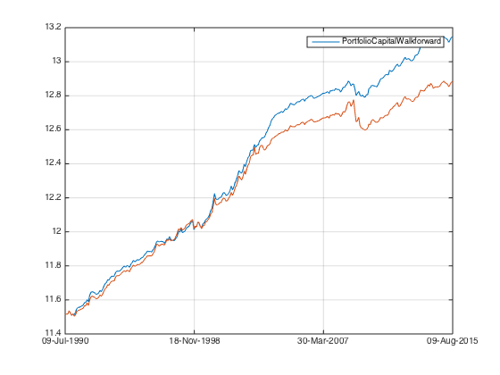 market neutral
portfolio_capital_ts = fun_sequential_backtest_partial(100000,px,benchmark_ts,0.92,portfolio_weight_ts,false); plot(log(portfolio_capital_ts)); fun_performance_meansure(portfolio_capital_ts,benchmark_ts,true); snapnow;
sharpe ratio is 1.56
vol is 0.04
return is 0.07
correlation with benchmark_ts is
1.0000 -0.1756
-0.1756 1.0000
partial hedge
portfolio_capital_ts = fun_sequential_backtest_partial(100000,px,benchmark_ts,0.7,portfolio_weight_ts,false); plot(log(portfolio_capital_ts)); fun_performance_meansure(portfolio_capital_ts,benchmark_ts,true); snapnow;
sharpe ratio is 1.69
vol is 0.06
return is 0.10
correlation with benchmark_ts is
1.0000 0.6821
0.6821 1.0000
sugical 150 with cost
portfolio_capital_ts = fun_sequential_backtest_surgical_debug(100000, px, benchmark_ts, rfr_ts, portfolio_weight_ts,list,1, 1, false,150,1,false,false,true); plot(log(portfolio_capital_ts)); fun_performance_meansure(portfolio_capital_ts,benchmark_ts,true); snapnow;
sharpe ratio is 1.37
vol is 0.07
return is 0.10
correlation with benchmark_ts is
1.0000 -0.3461
-0.3461 1.0000
sugical 500 without cost
portfolio_capital_ts = fun_sequential_backtest_surgical_debug(100000, px, benchmark_ts, rfr_ts, portfolio_weight_ts,list,1, 1, false,500,1,true,false,true); plot(log(portfolio_capital_ts)); fun_performance_meansure(portfolio_capital_ts,benchmark_ts,true); snapnow;
sharpe ratio is 1.55
vol is 0.06
return is 0.09
correlation with benchmark_ts is
1.0000 -0.2902
-0.2902 1.0000
sugical 150 with cost spx 0.92 partial hedge
portfolio_capital_ts = fun_sequential_backtest_surgical_debug(100000, px, benchmark_ts, rfr_ts, portfolio_weight_ts,list,1, 0.92, false,150,1,false,false,true); plot(log(portfolio_capital_ts)); fun_performance_meansure(portfolio_capital_ts,benchmark_ts,true); snapnow;
sharpe ratio is 1.60
vol is 0.07
return is 0.11
correlation with benchmark_ts is
1.0000 -0.1576
-0.1576 1.0000
sugical 150 with cost spx 0.7 partial hedge
portfolio_capital_ts = fun_sequential_backtest_surgical_debug(100000, px, spx_ts, rfr_ts, portfolio_weight_ts,list,1, 0.7, false,150,1,false,false,true);
plot(log(portfolio_capital_ts));
fun_performance_meansure(portfolio_capital_ts,benchmark_ts,true);
snapnow;
hold off;
sharpe ratio is 1.28
vol is 0.12
return is 0.16
correlation with benchmark_ts is
1.0000 0.3936
0.3936 1.0000
Mini Conclusion(Combined score)
Uber result. The only blemish is using S&P as a hedge introduced quite a bit of noise to the otherwise uber performance.
Individual scores MOM
score_weight = [1 0 0 0 0]; score_combined_ts = score_mom_ts*score_weight(1) + score_pb_ts*score_weight(2) + score_cap_ts*score_weight(3) + score_beta_ts*score_weight(4) + score_quality_ts*score_weight(5); score_combined_ts = fun_combine_score(score_combined_ts); portfolio_weight_ts = fun_portfolio_weight_sector_neutral(score_combined_ts,'longonly'); portfolio_capital_ts = fun_sequential_backtest_autoadjust(100000,px,benchmark_ts,portfolio_weight_ts,false); plot(log(portfolio_capital_ts)); fun_performance_meansure(portfolio_capital_ts,benchmark_ts,true); hold on; snapnow;
sharpe ratio is 0.53
vol is 0.06
return is 0.03
correlation with benchmark_ts is
1.0000 -0.2623
-0.2623 1.0000
surgical 150 without cost
portfolio_capital_ts = fun_sequential_backtest_surgical_debug(100000, px, benchmark_ts, rfr_ts, portfolio_weight_ts,list,1, 1, false,150,1,true,false,true); plot(log(portfolio_capital_ts)); snapnow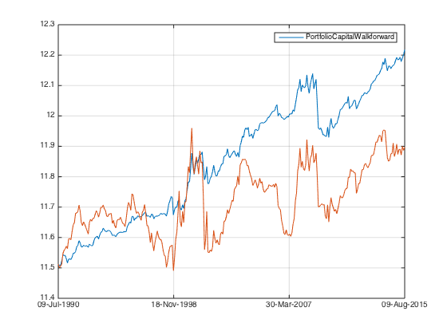
surgical 500 without cost
portfolio_capital_ts = fun_sequential_backtest_surgical_debug(100000, px, benchmark_ts, rfr_ts, portfolio_weight_ts,list,1, 1, false,500,1,true,false,true); plot(log(portfolio_capital_ts)); snapnow
surgical 150 with cost
portfolio_capital_ts = fun_sequential_backtest_surgical_debug(100000, px, benchmark_ts, rfr_ts, portfolio_weight_ts,list,1, 1, false,150,1,false,false,true); plot(log(portfolio_capital_ts)); snapnow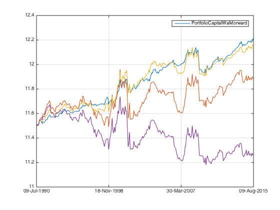
surgical 150 with cost & spx hedge
portfolio_capital_ts = fun_sequential_backtest_surgical_debug(100000, px, spx_ts, rfr_ts, portfolio_weight_ts,list,1, 1, false,150,1,false,false,true);
plot(log(portfolio_capital_ts));
snapnow
hold off;
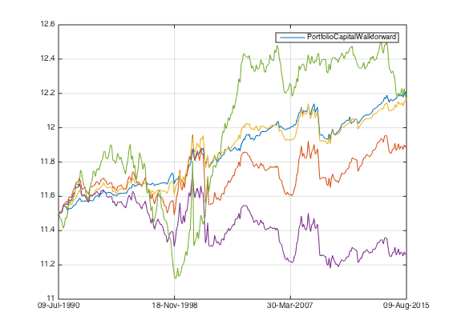 Mini Conclusion (MOM)
individual signal is so weak that it simply won't survive the cost, number of securities limite and imperfect hedge. Combine Various factors togather is the only way to take advantage of them.
All the rest
MOM
score_weight = [1 0 0 0 0]; score_combined_ts = score_mom_ts*score_weight(1) + score_pb_ts*score_weight(2) + score_cap_ts*score_weight(3) + score_beta_ts*score_weight(4) + score_quality_ts*score_weight(5); score_combined_ts = fun_combine_score(score_combined_ts); portfolio_weight_ts = fun_portfolio_weight_sector_neutral(score_combined_ts,'longonly'); portfolio_capital_ts = fun_sequential_backtest_autoadjust(100000,px,benchmark_ts,portfolio_weight_ts,false); plot(log(portfolio_capital_ts)); fun_performance_meansure(portfolio_capital_ts,benchmark_ts,true); hold on; snapnow; mom_large_ts = portfolio_capital_ts;
sharpe ratio is 0.53
vol is 0.06
return is 0.03
correlation with benchmark_ts is
1.0000 -0.2623
-0.2623 1.0000
PB
score_weight = [0 1 0 0 0]; score_combined_ts = score_mom_ts*score_weight(1) + score_pb_ts*score_weight(2) + score_cap_ts*score_weight(3) + score_beta_ts*score_weight(4) + score_quality_ts*score_weight(5); score_combined_ts = fun_combine_score(score_combined_ts); portfolio_weight_ts = fun_portfolio_weight_sector_neutral(score_combined_ts,'longonly'); portfolio_capital_ts = fun_sequential_backtest_autoadjust(100000,px,benchmark_ts,portfolio_weight_ts,false); plot(log(portfolio_capital_ts)); fun_performance_meansure(portfolio_capital_ts,benchmark_ts,true); hold on; snapnow; pb_large_ts = portfolio_capital_ts;
sharpe ratio is 0.62
vol is 0.06
return is 0.03
correlation with benchmark_ts is
1.0000 0.0628
0.0628 1.0000
SML
score_weight = [0 0 1 0 0]; score_combined_ts = score_mom_ts*score_weight(1) + score_pb_ts*score_weight(2) + score_cap_ts*score_weight(3) + score_beta_ts*score_weight(4) + score_quality_ts*score_weight(5); score_combined_ts = fun_combine_score(score_combined_ts); portfolio_weight_ts = fun_portfolio_weight_sector_neutral(score_combined_ts,'longonly'); portfolio_capital_ts = fun_sequential_backtest_autoadjust(100000,px,benchmark_ts,portfolio_weight_ts,false); plot(log(portfolio_capital_ts)); fun_performance_meansure(portfolio_capital_ts,benchmark_ts,true); hold on; snapnow; sml_large_ts = portfolio_capital_ts;
sharpe ratio is 0.65
vol is 0.05
return is 0.04
correlation with benchmark_ts is
1.0000 -0.0350
-0.0350 1.0000

BETA
score_weight = [0 0 0 1 0]; score_combined_ts = score_mom_ts*score_weight(1) + score_pb_ts*score_weight(2) + score_cap_ts*score_weight(3) + score_beta_ts*score_weight(4) + score_quality_ts*score_weight(5); score_combined_ts = fun_combine_score(score_combined_ts); portfolio_weight_ts = fun_portfolio_weight_sector_neutral(score_combined_ts,'longonly'); portfolio_capital_ts = fun_sequential_backtest_autoadjust(100000,px,benchmark_ts,portfolio_weight_ts,false); plot(log(portfolio_capital_ts)); fun_performance_meansure(portfolio_capital_ts,benchmark_ts,true); hold on; snapnow; beta_large_ts = portfolio_capital_ts;
sharpe ratio is 0.30
vol is 0.04
return is 0.01
correlation with benchmark_ts is
1.0000 -0.3790
-0.3790 1.0000
QUAL
score_weight = [0 0 0 0 1]; score_combined_ts = score_mom_ts*score_weight(1) + score_pb_ts*score_weight(2) + score_cap_ts*score_weight(3) + score_beta_ts*score_weight(4) + score_quality_ts*score_weight(5); score_combined_ts = fun_combine_score(score_combined_ts); portfolio_weight_ts = fun_portfolio_weight_sector_neutral(score_combined_ts,'longonly'); portfolio_capital_ts = fun_sequential_backtest_autoadjust(100000,px,benchmark_ts,portfolio_weight_ts,false); plot(log(portfolio_capital_ts)); fun_performance_meansure(portfolio_capital_ts,benchmark_ts,true); hold on; snapnow; qual_large_ts = portfolio_capital_ts;
sharpe ratio is 1.09
vol is 0.03
return is 0.03
correlation with benchmark_ts is
1.0000 -0.2617
-0.2617 1.0000
MOM, BETA & QUAL show negative correlation with the benchmark. To see market neutral result:
MOM Market neutral
score_weight = [1 0 0 0 0]; score_combined_ts = score_mom_ts*score_weight(1) + score_pb_ts*score_weight(2) + score_cap_ts*score_weight(3) + score_beta_ts*score_weight(4) + score_quality_ts*score_weight(5); score_combined_ts = fun_combine_score(score_combined_ts); portfolio_weight_ts = fun_portfolio_weight_sector_neutral(score_combined_ts,'longonly'); portfolio_capital_ts = fun_sequential_backtest_surgical_debug(100000, px, benchmark_ts, rfr_ts, portfolio_weight_ts,list,1, 0.92, false,500,1,true,false,true); plot(log(portfolio_capital_ts)); fun_performance_meansure(portfolio_capital_ts,benchmark_ts,true); hold on; snapnow; mom_mn_large_ts = portfolio_capital_ts;
sharpe ratio is 0.55
vol is 0.07
return is 0.04
correlation with benchmark_ts is
1.0000 -0.0364
-0.0364 1.0000
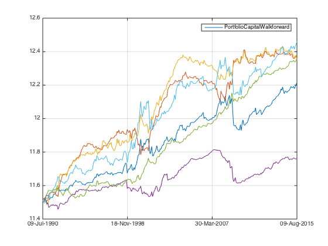 Beta Market neutral
score_weight = [0 0 0 1 0]; score_combined_ts = score_mom_ts*score_weight(1) + score_pb_ts*score_weight(2) + score_cap_ts*score_weight(3) + score_beta_ts*score_weight(4) + score_quality_ts*score_weight(5); score_combined_ts = fun_combine_score(score_combined_ts); portfolio_weight_ts = fun_portfolio_weight_sector_neutral(score_combined_ts,'longonly'); portfolio_capital_ts = fun_sequential_backtest_surgical_debug(100000, px, benchmark_ts, rfr_ts, portfolio_weight_ts,list,1, 0.92, false,500,1,true,false,true); plot(log(portfolio_capital_ts)); fun_performance_meansure(portfolio_capital_ts,benchmark_ts,true); hold on; snapnow; beta_mn_large_ts = portfolio_capital_ts;
sharpe ratio is 0.56
vol is 0.05
return is 0.03
correlation with benchmark_ts is
1.0000 -0.0700
-0.0700 1.0000
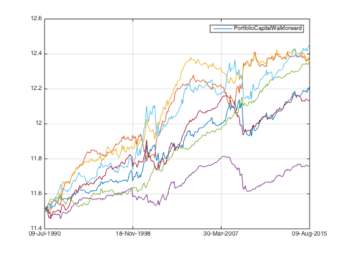 QUAL Market neutral
score_weight = [0 0 0 0 1]; score_combined_ts = score_mom_ts*score_weight(1) + score_pb_ts*score_weight(2) + score_cap_ts*score_weight(3) + score_beta_ts*score_weight(4) + score_quality_ts*score_weight(5); score_combined_ts = fun_combine_score(score_combined_ts); portfolio_weight_ts = fun_portfolio_weight_sector_neutral(score_combined_ts,'longonly'); portfolio_capital_ts = fun_sequential_backtest_surgical_debug(100000, px, benchmark_ts, rfr_ts, portfolio_weight_ts,list,1, 0.95, false,500,1,true,false,true); plot(log(portfolio_capital_ts)); fun_performance_meansure(portfolio_capital_ts,benchmark_ts,true); hold on; snapnow; qual_mn_large_ts = portfolio_capital_ts;
sharpe ratio is 1.04
vol is 0.04
return is 0.04
correlation with benchmark_ts is
1.0000 0.0432
0.0432 1.0000
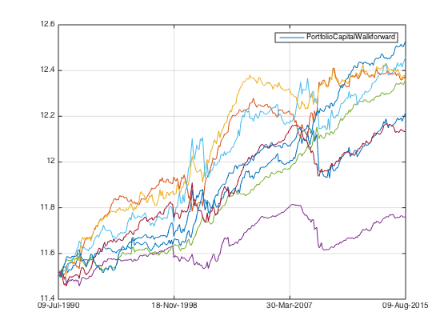 Magic: simple equal weight
score_weight = [0.2 0.2 0.2 0.2 0.2]; score_combined_ts = score_mom_ts*score_weight(1) + score_pb_ts*score_weight(2) + score_cap_ts*score_weight(3) + score_beta_ts*score_weight(4) + score_quality_ts*score_weight(5); score_combined_ts = fun_combine_score(score_combined_ts); portfolio_weight_ts = fun_portfolio_weight_sector_neutral(score_combined_ts,'longonly'); portfolio_capital_ts = fun_sequential_backtest_surgical_debug(100000, px, benchmark_ts, rfr_ts, portfolio_weight_ts,list,1, 0.94, false,500,1,true,false,true); plot(log(portfolio_capital_ts)); fun_performance_meansure(portfolio_capital_ts,benchmark_ts,true); hold off; snapnow; eq_mn_large_ts = portfolio_capital_ts;
sharpe ratio is 1.94
vol is 0.05
return is 0.10
correlation with benchmark_ts is
1.0000 -0.1320
-0.1320 1.0000
Mini Conclusion (All the rest)
Pas mal~
Smaller dataset
let's do it all over again with smaller dataset so that I can compare.
load('../data_equity_list_us.mat'); load('../data_field_list.mat'); load('../data_historical_data_us.mat'); load('../rfr_ts.mat'); load('../cap_benchmark_ts.mat'); load('../spx_ts.mat');
take data sample, load data & the list
index = datasample(1:1300,1000,'Replace',false);
px = fun_load_price(history_us, equity_list_us, index);
px = fun_clean_data(px);
list = equity_list_us(index,:);
load observations
mom_ts = fun_calculate_mom(px); pb_ts = fun_load_observations(history_us, equity_list_us, index,'pb'); cap_ts = fun_load_observations(history_us, equity_list_us, index,'cap'); beta_ts = fun_load_observations(history_us, equity_list_us, index,'beta'); grossmargin_ts = fun_load_observations(history_us, equity_list_us, index,'gm'); turnover_ts = fun_load_observations(history_us, equity_list_us, index,'turnover'); roa_ts = fun_load_observations(history_us, equity_list_us, index,'roa'); leverage_ts = fun_load_observations(history_us, equity_list_us, index,'leverage');
calculate score
score_mom_ts = fun_calculate_score(mom_ts,list,'sectorsort',px); score_pb_ts = -fun_calculate_score(pb_ts,list,'sectorsort',px); score_cap_ts = -fun_calculate_score(cap_ts,list,'sectorsort',px); score_beta_ts = -fun_calculate_score(beta_ts,list,'sectorsort',px); score_leverage_ts = -fun_calculate_score(leverage_ts,list,'sectorsort',px); score_roa_ts = fun_calculate_score(roa_ts,list,'sectorsort',px); score_grossmargin_ts = fun_calculate_score(grossmargin_ts,list,'sectorsort',px); score_turnover_ts = fun_calculate_score(turnover_ts,list,'sectorsort',px); score_leverage_ts = fillts(score_leverage_ts,0); score_roa_ts = fillts(score_roa_ts,0); score_grossmargin_ts = fillts(score_grossmargin_ts,0); score_turnover_ts = fillts(score_turnover_ts,0); score_quality_ts = score_leverage_ts+score_roa_ts+score_grossmargin_ts+score_turnover_ts; score_quality_ts = fun_combine_score(score_quality_ts);
Trim
score_roa_ts = score_roa_ts(75:end);
score_leverage_ts = score_leverage_ts(75:end);
score_grossmargin_ts = score_grossmargin_ts(75:end);
score_turnover_ts = score_turnover_ts(75:end);
score_mom_ts = score_mom_ts(75:end);
score_pb_ts = score_pb_ts(75:end);
score_cap_ts = score_cap_ts(75:end);
score_beta_ts = score_beta_ts(75:end);
score_quality_ts = score_quality_ts(75:end);
score_mom_ts = fillts(score_mom_ts,0);
score_pb_ts = fillts(score_pb_ts,0);
score_cap_ts = fillts(score_cap_ts,0);
score_beta_ts = fillts(score_beta_ts,0);
score_quality_ts = fillts(score_quality_ts,0);
score_ts = {score_mom_ts; score_pb_ts; score_cap_ts; score_beta_ts; score_quality_ts};
px = px(75:end);
% Combine score
score_weight = [0.2 0 0.4 0.1 0.3];
score_combined_ts = score_mom_ts*score_weight(1) + score_pb_ts*score_weight(2) + score_cap_ts*score_weight(3) + score_beta_ts*score_weight(4) + score_quality_ts*score_weight(5);
score_combined_ts = fun_combine_score(score_combined_ts);
Benchmark
portfolio_weight_eq_weight_ts = fun_portfolio_weight_sector_neutral(score_combined_ts,'equalweight');
benchmark_ts = fun_sequential_backtest_autoadjust(100,px,benchmark_ts,portfolio_weight_eq_weight_ts,true);
MOM
score_weight = [1 0 0 0 0]; score_combined_ts = score_mom_ts*score_weight(1) + score_pb_ts*score_weight(2) + score_cap_ts*score_weight(3) + score_beta_ts*score_weight(4) + score_quality_ts*score_weight(5); score_combined_ts = fun_combine_score(score_combined_ts); portfolio_weight_ts = fun_portfolio_weight_sector_neutral(score_combined_ts,'longonly'); portfolio_capital_ts = fun_sequential_backtest_autoadjust(100000,px,benchmark_ts,portfolio_weight_ts,false); plot(log(portfolio_capital_ts)); fun_performance_meansure(portfolio_capital_ts,benchmark_ts,true); hold on; snapnow; mom_small_ts = portfolio_capital_ts;
sharpe ratio is 0.42
vol is 0.07
return is 0.03
correlation with benchmark_ts is
1.0000 -0.3047
-0.3047 1.0000
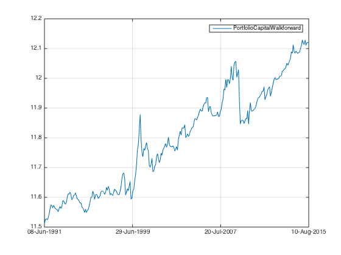 PB
score_weight = [0 1 0 0 0]; score_combined_ts = score_mom_ts*score_weight(1) + score_pb_ts*score_weight(2) + score_cap_ts*score_weight(3) + score_beta_ts*score_weight(4) + score_quality_ts*score_weight(5); score_combined_ts = fun_combine_score(score_combined_ts); portfolio_weight_ts = fun_portfolio_weight_sector_neutral(score_combined_ts,'longonly'); portfolio_capital_ts = fun_sequential_backtest_autoadjust(100000,px,benchmark_ts,portfolio_weight_ts,false); plot(log(portfolio_capital_ts)); fun_performance_meansure(portfolio_capital_ts,benchmark_ts,true); hold on; snapnow; pb_small_ts = portfolio_capital_ts;
sharpe ratio is 0.17
vol is 0.07
return is 0.01
correlation with benchmark_ts is
1.0000 0.0443
0.0443 1.0000
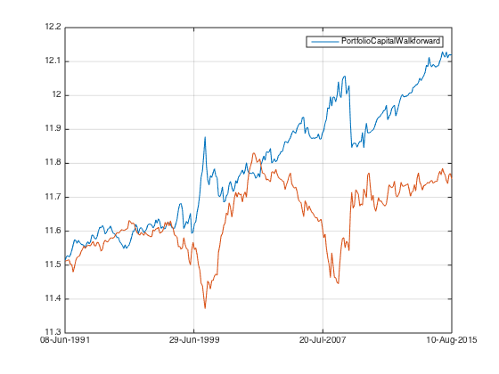 SML
score_weight = [0 0 1 0 0]; score_combined_ts = score_mom_ts*score_weight(1) + score_pb_ts*score_weight(2) + score_cap_ts*score_weight(3) + score_beta_ts*score_weight(4) + score_quality_ts*score_weight(5); score_combined_ts = fun_combine_score(score_combined_ts); portfolio_weight_ts = fun_portfolio_weight_sector_neutral(score_combined_ts,'longonly'); portfolio_capital_ts = fun_sequential_backtest_autoadjust(100000,px,benchmark_ts,portfolio_weight_ts,false); plot(log(portfolio_capital_ts)); fun_performance_meansure(portfolio_capital_ts,benchmark_ts,true); hold on; snapnow; sml_small_ts = portfolio_capital_ts;
sharpe ratio is 0.64
vol is 0.05
return is 0.03
correlation with benchmark_ts is
1.0000 0.0432
0.0432 1.0000
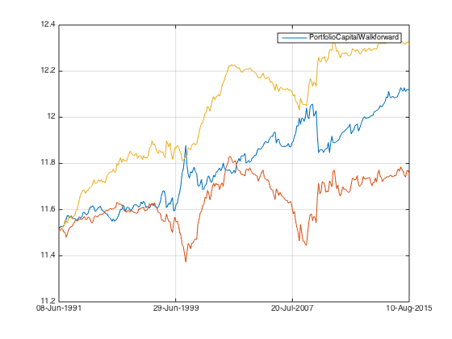 BETA
score_weight = [0 0 0 1 0]; score_combined_ts = score_mom_ts*score_weight(1) + score_pb_ts*score_weight(2) + score_cap_ts*score_weight(3) + score_beta_ts*score_weight(4) + score_quality_ts*score_weight(5); score_combined_ts = fun_combine_score(score_combined_ts); portfolio_weight_ts = fun_portfolio_weight_sector_neutral(score_combined_ts,'longonly'); portfolio_capital_ts = fun_sequential_backtest_autoadjust(100000,px,benchmark_ts,portfolio_weight_ts,false); plot(log(portfolio_capital_ts)); fun_performance_meansure(portfolio_capital_ts,benchmark_ts,true); hold on; snapnow; beta_small_ts = portfolio_capital_ts;
sharpe ratio is 0.05
vol is 0.04
return is 0.00
correlation with benchmark_ts is
1.0000 -0.3484
-0.3484 1.0000
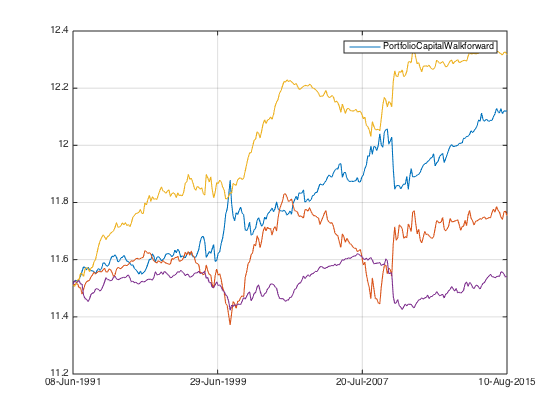 QUAL
score_weight = [0 0 0 0 1]; score_combined_ts = score_mom_ts*score_weight(1) + score_pb_ts*score_weight(2) + score_cap_ts*score_weight(3) + score_beta_ts*score_weight(4) + score_quality_ts*score_weight(5); score_combined_ts = fun_combine_score(score_combined_ts); portfolio_weight_ts = fun_portfolio_weight_sector_neutral(score_combined_ts,'longonly'); portfolio_capital_ts = fun_sequential_backtest_autoadjust(100000,px,benchmark_ts,portfolio_weight_ts,false); plot(log(portfolio_capital_ts)); fun_performance_meansure(portfolio_capital_ts,benchmark_ts,true); hold on; snapnow; qual_small_ts = portfolio_capital_ts;
sharpe ratio is 0.73
vol is 0.04
return is 0.03
correlation with benchmark_ts is
1.0000 -0.3349
-0.3349 1.0000
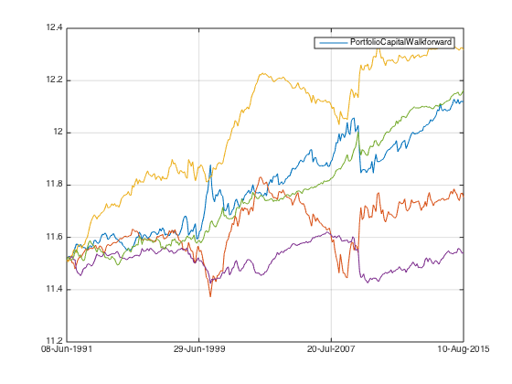 MOM, BETA & QUAL show negative correlation with the benchmark. To see market neutral result:
MOM Market neutral
score_weight = [1 0 0 0 0]; score_combined_ts = score_mom_ts*score_weight(1) + score_pb_ts*score_weight(2) + score_cap_ts*score_weight(3) + score_beta_ts*score_weight(4) + score_quality_ts*score_weight(5); score_combined_ts = fun_combine_score(score_combined_ts); portfolio_weight_ts = fun_portfolio_weight_sector_neutral(score_combined_ts,'longonly'); portfolio_capital_ts = fun_sequential_backtest_surgical_debug(100000, px, benchmark_ts, rfr_ts, portfolio_weight_ts,list,1, 0.91, false,150,1,true,false,true); plot(log(portfolio_capital_ts)); fun_performance_meansure(portfolio_capital_ts,benchmark_ts,true); hold on; snapnow; mom_mn_small_ts = portfolio_capital_ts;
sharpe ratio is 0.46
vol is 0.07
return is 0.03
correlation with benchmark_ts is
1.0000 -0.0719
-0.0719 1.0000
Beta Market neutral
score_weight = [0 0 0 1 0]; score_combined_ts = score_mom_ts*score_weight(1) + score_pb_ts*score_weight(2) + score_cap_ts*score_weight(3) + score_beta_ts*score_weight(4) + score_quality_ts*score_weight(5); score_combined_ts = fun_combine_score(score_combined_ts); portfolio_weight_ts = fun_portfolio_weight_sector_neutral(score_combined_ts,'longonly'); portfolio_capital_ts = fun_sequential_backtest_surgical_debug(100000, px, benchmark_ts, rfr_ts, portfolio_weight_ts,list,1, 0.91, false,150,1,true,false,true); plot(log(portfolio_capital_ts)); fun_performance_meansure(portfolio_capital_ts,benchmark_ts,true); hold on; snapnow; beta_mn_small_ts = portfolio_capital_ts;
sharpe ratio is 0.25
vol is 0.04
return is 0.01
correlation with benchmark_ts is
1.0000 0.0162
0.0162 1.0000
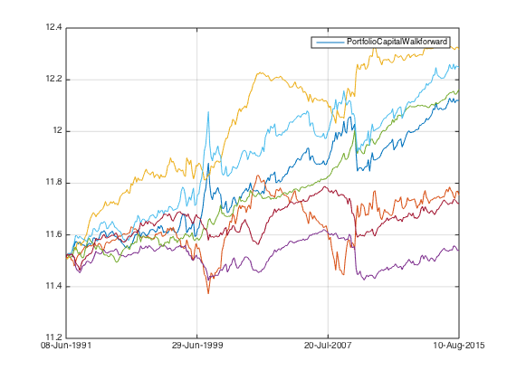 QUAL Market neutral
score_weight = [0 0 0 0 1]; score_combined_ts = score_mom_ts*score_weight(1) + score_pb_ts*score_weight(2) + score_cap_ts*score_weight(3) + score_beta_ts*score_weight(4) + score_quality_ts*score_weight(5); score_combined_ts = fun_combine_score(score_combined_ts); portfolio_weight_ts = fun_portfolio_weight_sector_neutral(score_combined_ts,'longonly'); portfolio_capital_ts = fun_sequential_backtest_surgical_debug(100000, px, benchmark_ts, rfr_ts, portfolio_weight_ts,list,1, 0.95, false,150,1,true,false,true); plot(log(portfolio_capital_ts)); fun_performance_meansure(portfolio_capital_ts,benchmark_ts,true); hold on; snapnow; qual_mn_small_ts = portfolio_capital_ts;
sharpe ratio is 0.86
vol is 0.04
return is 0.03
correlation with benchmark_ts is
1.0000 -0.0831
-0.0831 1.0000
Magic: simple equal weight
score_weight = [0.2 0.2 0.2 0.2 0.2]; score_combined_ts = score_mom_ts*score_weight(1) + score_pb_ts*score_weight(2) + score_cap_ts*score_weight(3) + score_beta_ts*score_weight(4) + score_quality_ts*score_weight(5); score_combined_ts = fun_combine_score(score_combined_ts); portfolio_weight_ts = fun_portfolio_weight_sector_neutral(score_combined_ts,'longonly'); portfolio_capital_ts = fun_sequential_backtest_surgical_debug(100000, px, benchmark_ts, rfr_ts, portfolio_weight_ts,list,1, 0.94, false,150,1,true,false,true); plot(log(portfolio_capital_ts)); fun_performance_meansure(portfolio_capital_ts,benchmark_ts,true); hold off; snapnow; eq_mn_small_ts = portfolio_capital_ts;
sharpe ratio is 0.96
vol is 0.04
return is 0.04
correlation with benchmark_ts is
1.0000 -0.0367
-0.0367 1.0000
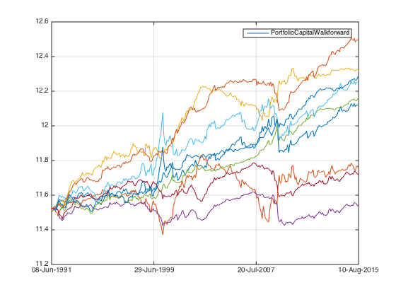 Compare large result with small result
figure; plot(log(mom_large_ts)); hold on; plot(log(mom_small_ts)); snapnow; plot(log(mom_mn_large_ts)); plot(log(mom_mn_small_ts)); hold off; snapnow; plot(log(pb_large_ts)); hold on; plot(log(pb_small_ts)); hold off; snapnow; plot(log(sml_large_ts)); hold on; plot(log(sml_small_ts)); hold off; snapnow; plot(log(beta_large_ts)); hold on; plot(log(beta_small_ts)); snapnow; plot(log(beta_mn_large_ts)); plot(log(beta_mn_small_ts)); snapnow; hold off; plot(log(qual_large_ts)); hold on; plot(log(qual_small_ts)); snapnow; plot(log(qual_mn_large_ts)); plot(log(qual_mn_small_ts)); snapnow; hold off; plot(log(eq_mn_large_ts)); hold on; plot(log(eq_mn_small_ts)); hold off; snapnow;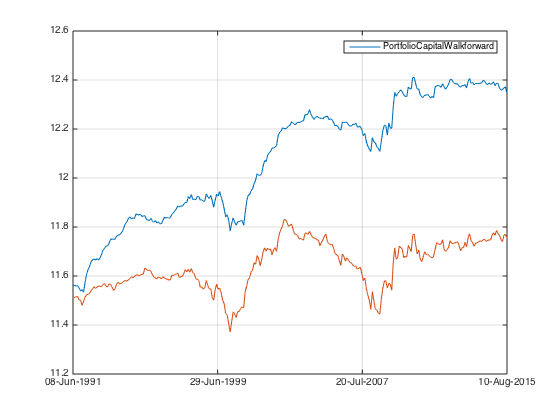
Conclusion